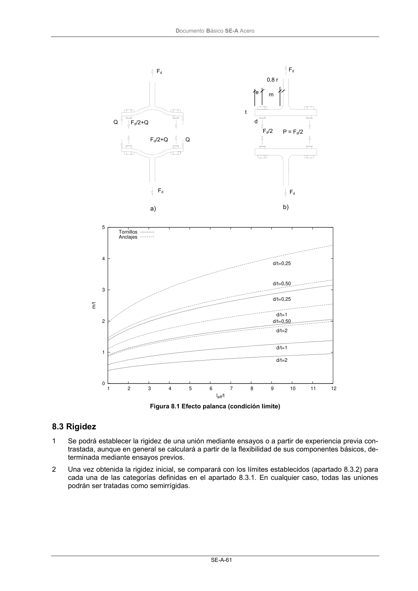

DB-SE-A Acero · edición 2007-10-23 · capa oficial
Documento DB-SE-A-oficial · SHA-256 del PDF 9ed9ea694aabfbda3bfbbef40dfe9223fde05d13c35bc2ba9751e5a96a22a64f
Página física 63 de 168.
Copia fiel del PDF fuente · Fuente oficial
Ficha de la disposición en la fuente oficial
Formato: Texto de la página (Markdown)
Documento Básico SE-A Acero SE-A-61 0 1 2 3 4 5 1 2 3 4 5 6 7 8 9 10 11 12 m/t leff/t d/t=0,25 d/t=0,50 d/t=0,25 d/t=1 d/t=0,50 d/t=2 d/t=1 d/t=2 Tornillos Anclajes Figura 8.1 Efecto palanca (condición límite) 8.3 Rigidez 1 Se podrá establecer la rigidez de una unión mediante ensayos o a partir de experiencia previa con- trastada, aunque en general se calculará a partir de la flexibilidad de sus componentes básicos, de- terminada mediante ensayos previos. 2 Una vez obtenida la rigidez inicial, se comparará con los límites establecidos (apartado 8.3.2) para cada una de las categorías definidas en el apartado 8.3.1. En cualquier caso, todas las uniones podrán ser tratadas como semirrígidas. t e d P = Fd/2 0,8 r Fd/2 Fd Fd Fd Fd/2+Q Fd/2+Q Q Q Fd a) b) m
